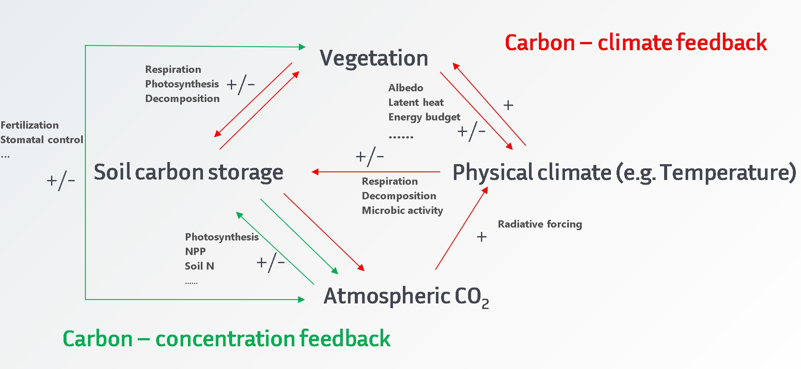

Reseach interest
1. Ecosystem modelling;
2. Arctic amplification study;
3. Biophysical and biogeochemical feedbacks;
4. Carbon cycle and GHG;
5. Some other climate change study using modelling, data analysis, and methods combined with field study
With the exception of the topics above, relevant studies with impressive methods/fidings within climate change could also triger my curiosity since I am in my master study now, and seeking a newly, innovative, significantive study topics always keeps me moving on.
Ongoing research
The Arctic is experiencing a phenomenon called Arctic amplification (AA) which has caused a rapid warming rate two to three times greater than that of the Northern hemisphere (NH) or global in both observed and modelled data over the past few decades. Previous studies focused mostly on temperature and sea ice albedo feedbacks; however, the impacts of biosphere feedbacks especially from carbon cycle feedbacks, are largely underexplored. In this study, different coupling experiments simulated by 11 Earth system models (ESMs) were used to assess the spatial and temporal changes of AA, as well as to identify potential causes related to carbon cycle feedbacks.
In this study, we aim to answer the following questions:
1. What are the spatial-temporal patterns of AA in different C4MIP experiments? What are the AA changes resulting from carbon-concentration feedback and carbon-climate feedback?);
2. Are these patterns consistent or inconsistent among Earth system models?;
3. If there are synergic or counteracting effects from carbon-concentration and carbon-climate feedbacks, are these effects associated with ocean or land processes?
Research project (Thesis) in bachelor
During my undergraduate education, I worked in the department's heavy metal geochemisty researh group. This fostered my interest in biogeochemical cyces.
Therefore, my thesis is about phytoremediation: Two kinds of Seldum alfredii (Hyperaccumulating and non- Hyperaccumulating ecotypes) were selected as the research material,
used high performance liquid chromatography (HPLC) to analyze the organic acid components of rhizosphere soil and non-rhizosphere soil.
In addition, the variation of microbial community structure across differennt concentrations was also been explored.
Bar plot showing difference of 2 plants 
Different microbial structure as well as correlation